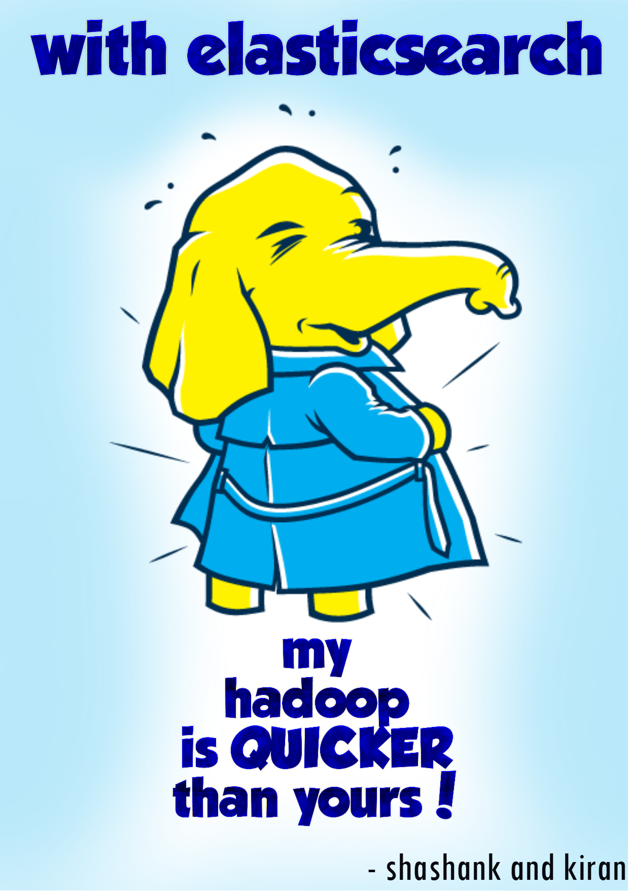

Jan 2014 - Jun 2014
I interned at PayPal India in my final semester of my bachelor's degree.
I worked in the uber-cool FPTI team (First Party Tracking Infrastucture), which is PayPal's analytics platform. I worked on two projects of which my main project (Scalable Query Framework) was also considered as my final year project. Both projects were funded for live implementation and are still used by PayPal!
This was an exciting and extremely fun project of building a query framework which could index, query and analyze huge amounts of PayPal user clickstream data in real time. It would in turn help the Product Management make better and faster decisions for PayPal.
Here is one of our posters:

I also worked on building the first POC of DruidUI Dashboard for PayPal Analytics. This was built using D3.JS, NodeJS and AngularJS providing OLAP operations on data hosted on Druid data-store. I also worked on the enhancement of this solution. This was presented in Strata+Hadoop world 2014 conference by Anil Madan, Senior Director of Engineering at PayPal.